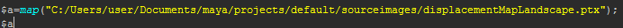

如果在置换曲面上生成基本体，则可以将基于 Ptex 的同一矢量置换贴图添加到“描述”(Description)中，使基本体在置换曲面上正确定位和定向。例如，如果对置换贴图形成的景观网格上的树进行实例化，则将贴图添加到“描述”(Description)可确保根据网格的形状生成树。
- 在 XGen 编辑器中，单击“基本体”(Primitives)选项卡。
- 在“置换”(Displacement)属性组中，启用“对贴图使用向量置换”(Use Vector Displacement for maps)。
- 若要将置换贴图添加到“描述”(Description)，需要创建贴图表达式。若要进行修改，请执行下列操作：
- 单击“置换”(Displacement)旁边的此图标
 。
。
- 在“XGen 表达式编辑器”(XGen Expression Editor)中，键入贴图表达式以源化置换贴图的位置。
例如：
 - 单击“接受”(Accept)。
现在，基本体的位置和方向跟随置换曲面的形状。
- 单击“置换”(Displacement)旁边的此图标